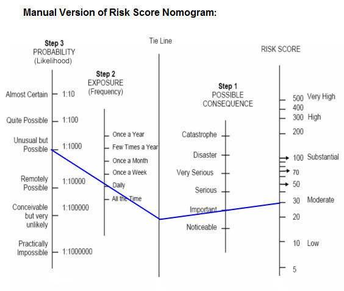
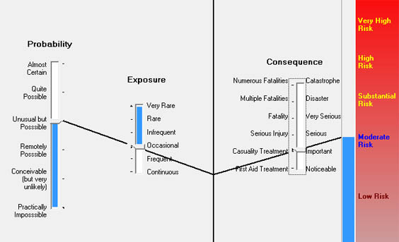

Risk Rating
There are many risk management methodologies available. Table 3 (Risk rating) in Element 4 identifies a risk level (low, moderate, high or very high) dependent on the consequence and likelihood.
Risk score nomograms are used to determine a risk score from 5 to 500 as shown in Figure 1. An electronic risk score calculator can be use to find a risk score very quickly).
A nomogram shows the relationship between three variables ie. consequence, exposure & probability/likelihood. The exact procedure is outlined below.
To use a risk score nomogram:
- Start with the most likely or typical CONSEQUENCES resulting from exposure to the hazard and mark your choice on the POSSIBLE CONSEQUENCES line.
- Estimate the EXPOSURE, that is, how often people, plant and equipment are exposed to the hazard, and mark your estimate on the EXPOSURE line.
- What is the likelihood or chance that the consequences you have predicted will follow? Mark your choice on the PROBABILITY line.
- Draw a line from the point on the PROBABILITY scale to the appropriate point on the EXPOSURE scale.
- Extend the line to the TIE LINE.
- Draw a line from the intersection of the TIE LINE to the appropriate point on the POSSIBLE CONSEQUENCES scale.
- Extend the line to the RISK SCORE scale.

Figure 1 Nomogram Manual
CALCULATING THE RISK SCORE
The risk score calculator is intended as a guide to identify level of risk.
The electronic risk score calculator allows you to quickly change the risk parameters. As shown in Figure 1 and 2 using the same risk parameters both nomograms display the same risk score (Moderate)

Figure 2 Nomogarm Electronic
(The procedure to calculate risk score electronically follows similar steps as in the manual risk score nomogram . Risk score nomograms are based on OHS Risk Assessment AS/NZS 4804:2001 and contained in HB205-2004 OHS Risk Management Handbook. The risk assessment calculator is intended as a guide to identify level of risk. The risk score should be interpreted with caution. It should only be used as a basis for reasoned judgment.)
You will work with the Electronic Risk Calculator in Element 5 by selection risk parameters and find the risk score.
|